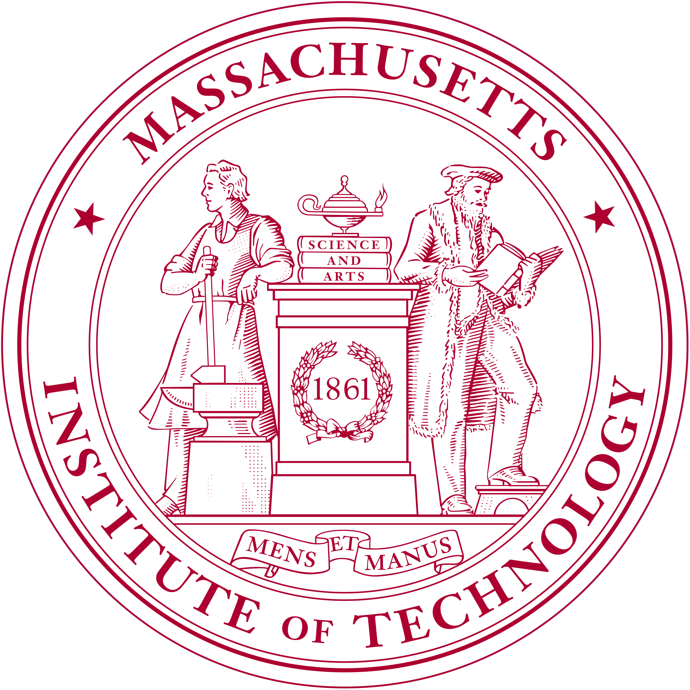
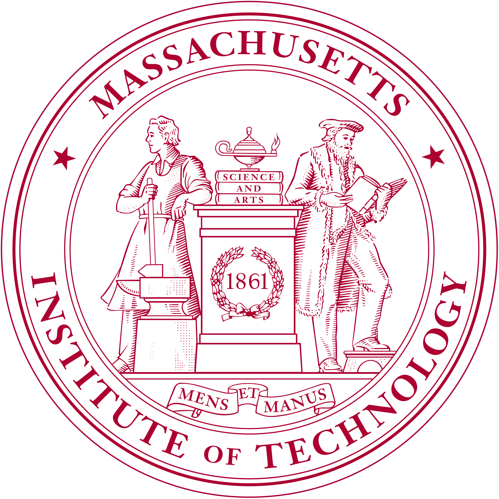

News
-
02/2023
One paper is accepted to CVPR 2023!
-
02/2023
I will join Prof. Hao Su's Lab at UC San Diego as a research intern from this summer!
-
12/2022
I am awarded with this year's SenseTime Scholarship, an academic scholarship that selects 30 undergrads from all over China in the field of AI!
-
11/2022
I am awarded with this year's Tongji Academic Star, the highest honor for undergrads at Tongji University!
-
09/2022
Back to campus after the Gap Year :)
|
Selected Publication
* : equivalent contribution, † : corresponding author
|

|
3D-Aware Object Goal Navigation via Simultaneous Exploration and Identification
Jiazhao Zhang*, Liu Dai*, Fanpeng Meng, Qingnan Fan, Xuelin Chen, Kai Xu, He Wang†
Accepted to CVPR 2023
[arXiv]
[Code]
[Project]
|
-
SenseTime Scholarship
2022
- Nationwide Selected 30 Undergraduates in the Field of AI.
-
Tongji Academic Star
2022
- Highest Honor for Undergrads at Tongji University (15/18536).
- Rank 1st among All Recipients.
-
Outstanding Student Scholarship of Tongji University
2020, 2021
|
-
National First Prize in Challenge Cup Competition: Research Track
2021 Fall
- Most Influential Research Competition among University Students in China.
- Best Record in College History.
-
National Silver Award in Challenge Cup Competition: Entrepreneurship Track
2023 Spring
- Best Record in College History.
-
Gold Award of Shanghai in Internet + Competition
2022 Summer
-
Silver Award of Shanghai in National College Student "Innovation, Creativity & Entrepreneurship" Challenge
2022 Spring
-
Second Prize of Shanghai & University Champion in FLTRP Cup National English Public Speaking Contest
2020 Fall
|
-
Teaching Assistant for Opensource Hardware and Programming (55010501)
Course delivered by Prof. Xiaohua Sun
2021 Fall
-
Talk : An Introduction to Open-World Object Detection
Delivered in EPIC Lab, Peking University
2022 Spring
[Slides]
-
Talk : A Tutorial of Embodied Navigation Tasks
Delivered in EPIC Lab, Peking University
2022 Summer
[Slides]
|
|


 

{kind=link}